更快记录孩子们的行为表现
LogKids网站（由于Firebase为境外服务器，不使用VPN可能影响体验过程）项目描述
这个网站是为了让幼儿园老师能更快捷地记录孩子的行为而建立的，因为一个老师要对很多孩子负责，所以很难把事情写下来或者只靠脑子记住不同孩子的所有行为。
这是我和我的其他三位队友在韩国科学技术院(KAIST)春季学期完成的HCI课程的学期项目。我负责部分网站的设计，所有后台的实现以及部分幼儿园老师的访谈任务。
该网站是由JavaScript、HTML、CSS、Firebase和一些开源库实现的。
通过5次对幼儿园老师ide采访，我们得出老师一般有3个任务要做:为孩子做一个快速简短的日志，完成未完成的日志，复习孩子的数据，对孩子的行为进行总结。更多细节如下列截图所示。
网站主页，用户（幼儿园教师）可从已在网站中有记录的孩子中选择一个进行操作，也可建立一个新的孩子的档案。
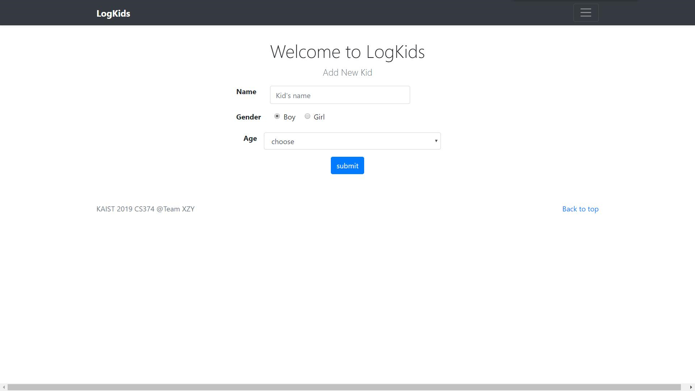
添加一个新的孩子。
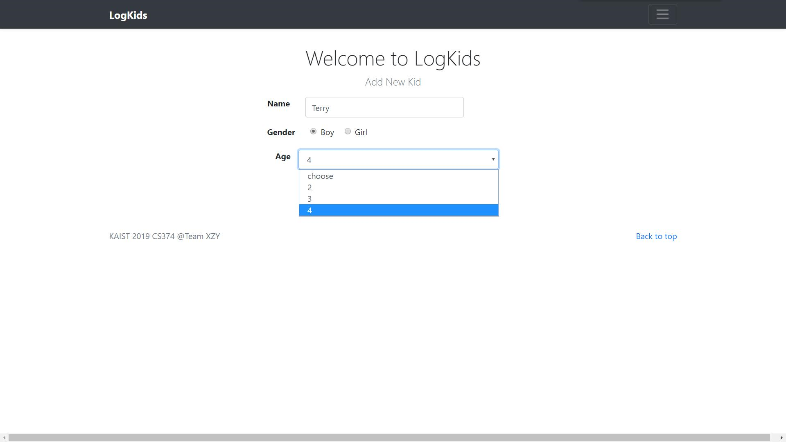
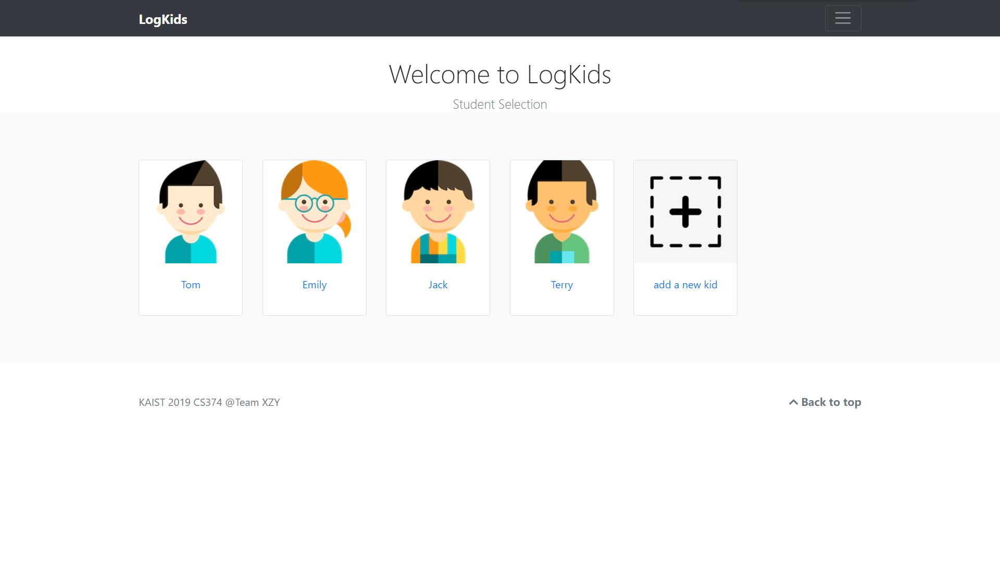
完成添加操作后，返回主页面。
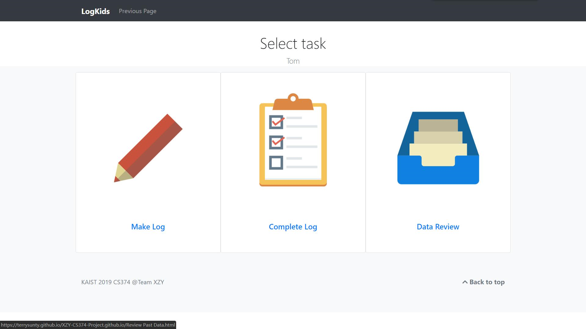
让我们选择Tom作为样例进行操作演示吧。此页面向用户展示了任务菜单界面。
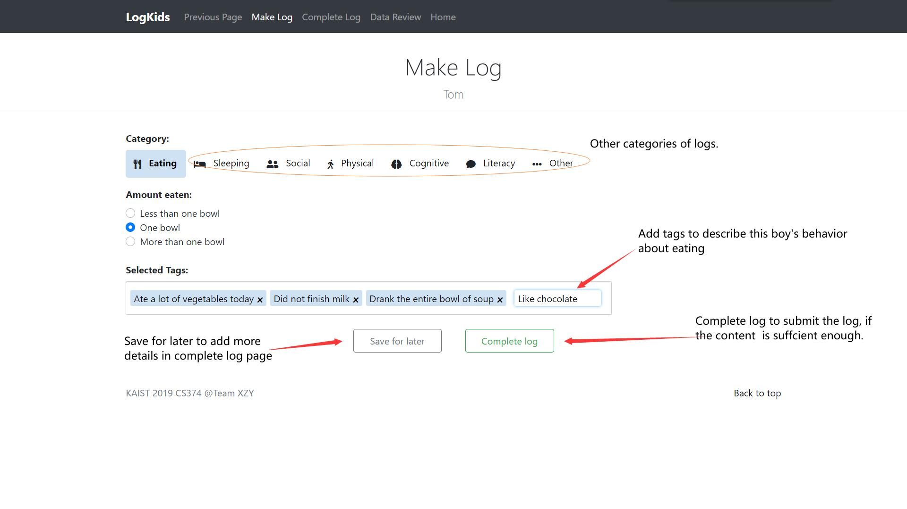
我们首先选择"Make Log"来完成对Tom的快速记录。当前页面所展示的是对Tom吃饭情况的记录，老师可以通过勾选提前定义好的情况描述和添加描述性标签来进行快速记录。 如果老师认为当前的描述已足够形容Tom该次的表现，老师可以点击“Complete Log"来完成此次记录，否则，可以点击”Save for Later"，在之后进行补充说明。
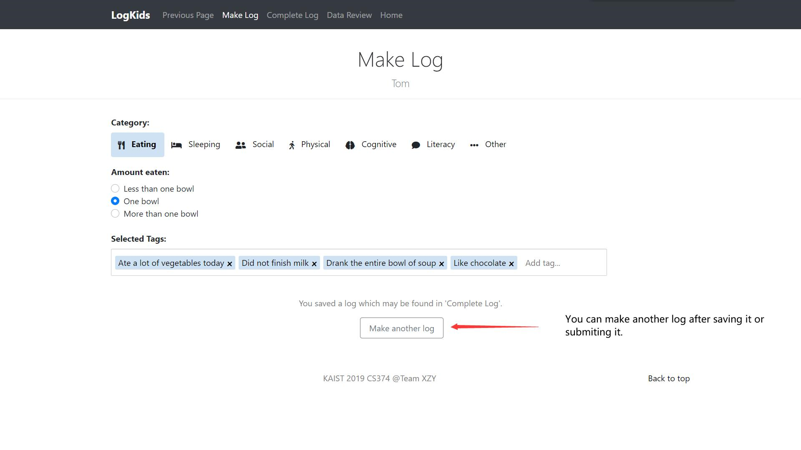
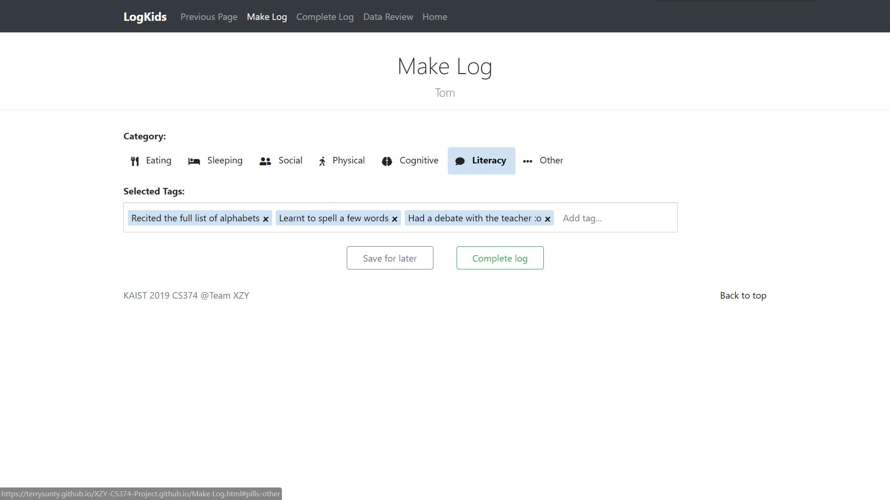
记录Tom在语文课上的学习情况。
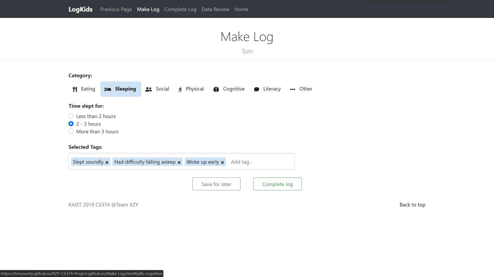
记录Tom睡觉的情况。
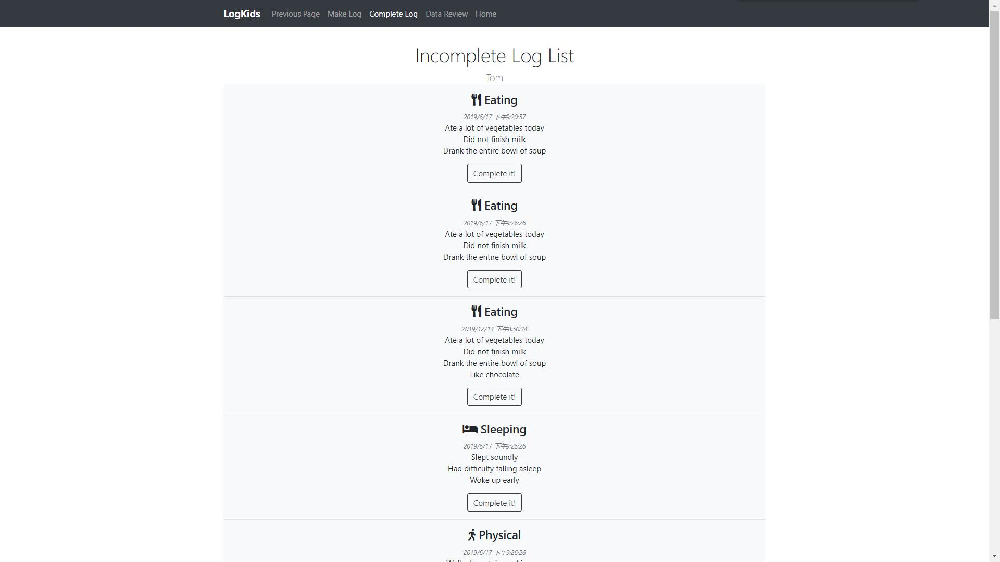
现在，让我们来完成“完善记录”的任务。
该页面向用户呈现了那些尚未完成的记录，所有记录都按照分类和时间标签进行排序。
让我们选择第三个来进行尝试！
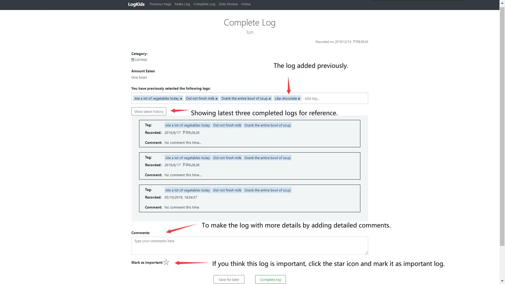
当前页面将向老师展示最近三次已完成的记录作为参考。为了使记录具有更多细节，老师还可在文本框中添加更多备注。 如果老师认为此次记录很重要，可以点击星标按钮，将本次记录标记为重要。

现在，通过饼状图，让我们回顾一下Tom过去这段时间的所有表现。
老师可以选择需要统计的时间段和行为类别。点击Review按钮后，网站将展示可量化的行为表现的统计（有的类别没有该项），以及使用最多的五个描述性标签。
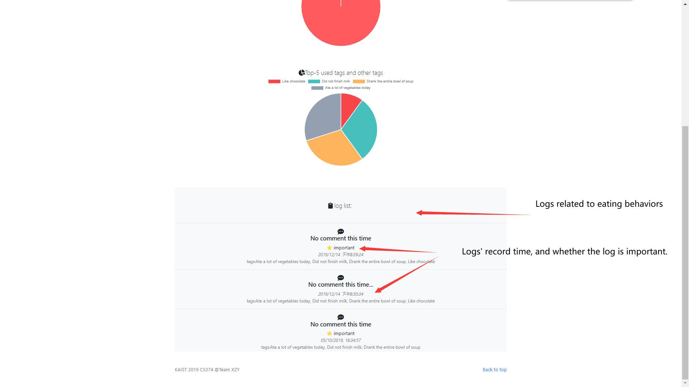
同时，该页面也会展示该类别最近的记录，按时间由近到远进行排序。